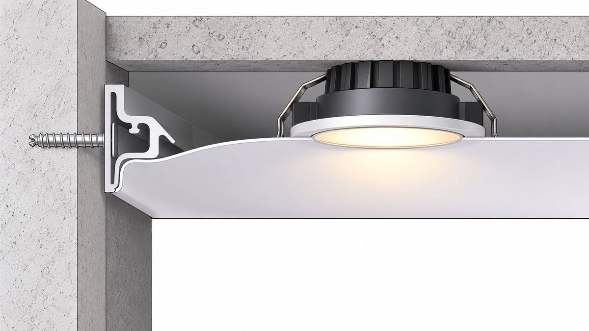

матовый ПВХ-потолок с установкой стоит 590–900 руб. за м², сатин — 700–1 100, тканевый — 1 200–2 500. Комната 18 м² обходится в 22 000–47 000 руб., и разница возникает не из-за полотна, а из-за 7 доплат: углы, светильники, обход труб, ниша под карниз, демонтаж, высота стен и кривизна. Реклама «от 390 руб./м²» почти всегда не включает монтаж и крепёж.
Из чего складывается цена
| Позиция | Цена | Доля в смете |
|---|---|---|
| Полотно ПВХ матовое | 250–450 руб./м² | 35–45 % |
| Профиль (багет) ПВХ или алюминий | 250–600 руб./м.п. | 15–20 % |
| Монтаж | 250–400 руб./м² | 20–25 % |
| Светильники и обходы | 350–1 200 руб./шт. | 10–20 % |
Смета считается по площади полотна, а не по площади пола: к комнате добавляют 5–10 % на заводской раскрой и 50–100 мм на каждую стену для заправки в профиль.
Типы полотна
| Тип | Цена с установкой | Срок службы | Особенность |
|---|---|---|---|
| ПВХ матовый | 590–900 руб./м² | 10–15 лет | не бликует, скрывает неровности |
| ПВХ сатиновый | 700–1 100 руб./м² | 10–15 лет | лёгкий блеск, «дороже» выглядит |
| ПВХ глянцевый | 750–1 200 руб./м² | 8–12 лет | визуально выше, видны стыки и пыль |
| Тканевый | 1 200–2 500 руб./м² | 15–20 лет | дышит, не боится холода, дороже монтаж |
Тканевый потолок нельзя ставить в ванной и на кухне без мощной вытяжки: он впитывает запахи и жир. ПВХ моется мыльным раствором, но боится температуры выше 60 °C и острых предметов.
Семь доплат, которые не пишут в рекламе
| Доплата | Цена | Когда возникает |
|---|---|---|
| Внутренний угол | 150–400 руб./шт. | комната сложной формы |
| Обход трубы | 500–1 200 руб./шт. | стояки на кухне и в санузле |
| Установка светильника | 350–800 руб./шт. | 6–12 точек на комнату |
| Ниша под карниз | 1 200–2 500 руб./м.п. | шторы «в потолок» |
| Демонтаж старого потолка | 150–300 руб./м² | гипсокартон, реечный, старый ПВХ |
| Высота стен больше 3 м | +10–15 % | лестницы, строительные леса |
| Кривизна стен больше 30 мм | +200–400 руб./м.п. | нужен усиленный профиль |
На комнате 18 м² шесть светильников и один обход трубы добавляют 3 000–6 000 руб. — это 10–15 % сметы, которые «забывают» в объявлении.
Расчёт комнаты 18 м²
| Позиция | Количество | Стоимость |
|---|---|---|
| Полотно ПВХ мат | 19 м² с раскроем | 5 000–8 500 руб. |
| Профиль по периметру | 18 м.п. | 4 500–10 800 руб. |
| Монтаж | 18 м² | 4 500–7 200 руб. |
| Светильники | 6 шт. | 2 100–4 800 руб. |
| Обход трубы | 1 шт. | 500–1 200 руб. |
| Ниша под карниз | 3 м.п. | 3 600–7 500 руб. |
Итого комната 18 м² — 20 200–40 000 руб. без ниши и 23 800–47 500 руб. с нишей. Смета «под ключ» с вывозом мусора и уборкой — плюс 2 000–4 000 руб.
Смета по типу квартиры
| Квартира | Площадь потолков | ПВХ мат «под ключ» | С нишами |
|---|---|---|---|
| Студия | 22–26 м² | 16 000–27 000 руб. | 21 000–36 000 руб. |
| 1-комнатная | 32–38 м² | 23 000–39 000 руб. | 30 000–52 000 руб. |
| 2-комнатная | 48–55 м² | 34 000–57 000 руб. | 45 000–76 000 руб. |
| 3-комнатная | 62–70 м² | 44 000–73 000 руб. | 58 000–97 000 руб. |
В студии потолок часто делают единым полотном на кухню-гостиную и коридор: это дешевле на 15–20 %, чем три отдельных полотна, но требует, чтобы все помещения были смежными без дверных коробок.
Кухня и санузел
| Помещение | Цена за м² | Особенности |
|---|---|---|
| Кухня 8–10 м² | 700–1 100 руб. | обход 2–3 труб, влагостойкое полотно, светильники у фартука |
| Санузел 4–6 м² | 800–1 300 руб. | обход стояков, герметизация, светильники IP44 |
| Коридор 6 м² | 650–950 руб. | много углов, низкие потолки |
В санузле полотно опускают на 30–50 мм ниже уровня стояка, чтобы скрыть трубы. Светильники — только IP44 и с драйвером вне зоны влаги.
Светильники и подсветка

- Точечный светильник — 350–800 руб. с установкой, мощность 5–7 Вт LED.
- На комнату 18 м² — 6–8 точек по схеме «по периметру плюс центр».
- Термокольцо обязательно: без него полотно вокруг светильника провисает через 1–2 года.
- LED-лента по периметру — 1 500–3 000 руб. за 10 м с блоком питания.
Порядок работ
- Замерить помещение по стенам на высоте монтажа, а не по полу.
- Смонтировать профиль по уровню с шагом крепления 300–400 мм.
- Развести электрику и закрепить платформы светильников до натяжки.
- Прогреть помещение до +40–50 °C тепловой пушкой и натянуть полотно.
- Заправить полотно в профиль, установить заглушки и светильники.
- Остудить помещение 2–3 часа, проверить швы и примыкания.
Смета по квартире 60 м²
| Вариант | Площадь | Стоимость |
|---|---|---|
| ПВХ мат без ниш | 60 м² | 42 000–66 000 руб. |
| ПВХ мат с нишами под карнизы | 60 м² + 12 м.п. | 56 000–96 000 руб. |
| Тканевый | 60 м² | 78 000–150 000 руб. |
Провисание полотна через 2–3 года — следствие экономии на профиле или монтаже без прогрева. Переделка одной комнаты: демонтаж, новое полотно и работа — 15 000–30 000 руб.
Чек-лист перед заказом
- В смете отдельно указаны полотно, профиль, монтаж, светильники и обходы.
- Цена за м² дана с установкой, а не «за материал».
- Углы и обходы труб посчитаны по факту, а не «включены».
- Профиль алюминиевый или ПВХ с металлическим усилением.
- Гарантия на полотно и монтаж — не меньше 3 лет.
Частые вопросы
Сколько стоит натяжной потолок в комнате 18 м²?
Матовый ПВХ с шестью светильниками — 20 200–40 000 руб. С нишей под карниз — до 47 500 руб. Тканевый — от 23 000 руб. только за полотно.
Можно ли ставить натяжной потолок в ванной?
Да, ПВХ. Он не боится влаги и конденсата. Тканевый в ванной нельзя: впитывает запахи и темнеет.
Насколько опустится потолок?
Минимум 30–40 мм при монтаже вровень со стеной и 50–70 мм при скрытом профиле. С нишей под карниз — 80–120 мм.
Почему реклама «от 390 руб./м²» не совпадает со сметой?
В цену входит только полотно без профиля, монтажа и светильников. Реальная смета «под ключ» — 590–1 100 руб./м².
Можно ли мыть натяжной потолок?
Да, мягкой губкой с мыльным раствором. Нельзя абразивы, спирт и растворители — они оставляют матовые пятна.
Что делать, если полотно провисло?
Прогреть помещение до +40 °C и натянуть феном. Если провис не уходит — полотно растянуто при монтаже, нужна замена.
Что входит в гарантию на натяжной потолок?
Полотно — 10–15 лет от производителя, монтаж — 3–5 лет от подрядчика. Гарантия не покрывает порезы, затопление сверху и следы клея после ремонта стен.
Можно ли натянуть потолок после ремонта стен?
Можно и нужно: полотно натягивают последним, после штукатурки, плитки и покраски. Иначе пыль и брызги испортят поверхность, а снять и поставить обратно полотно стоит 30–40 % от монтажа.